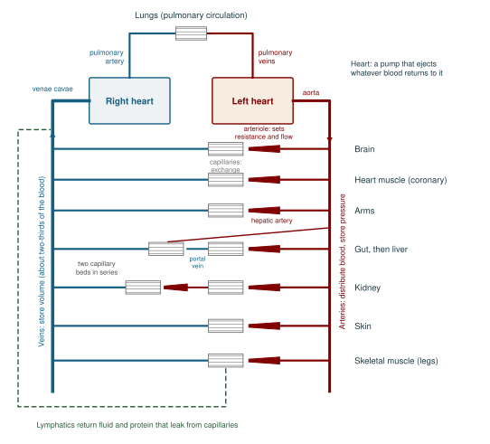
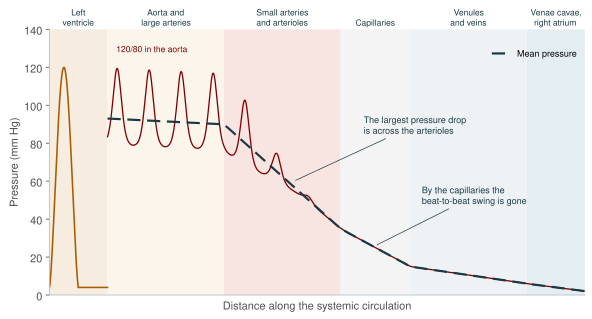
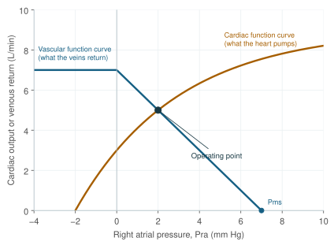

1 Cardiovascular Physiology Overview
A map of the circuit and of the course
- Name the job of each part of the circuit: heart, arteries, arterioles, capillaries, veins and lymphatics.
- Explain why the systemic beds are arranged in parallel, and why the pulmonary circuit is in series with them.
- Explain why a clot in one renal artery spares the rest of the body, while a large clot in the main pulmonary artery can kill.
- Describe how the pressure swing of each heartbeat is smoothed out before blood reaches the capillaries.
- Place each upcoming topic in the course sequence, from excitable cells to the special circulations.
This chapter is a map. Almost every topic in it returns as its own chapter, so treat it as orientation, not as material to master now.
The first part of the opening cardiovascular lecture is a single pass through the whole course. The lecture opens with a line from a teaching mentor, “concepts better caught than taught,” and that is how this material is learned: you meet the same few ideas again and again, from different directions, until they stick. The course motto makes the same point: “Facts are relatively few. Mastery can be elusive.” The work is in seeing how the pieces act on each other, so that a change in one place (a bleed, a stiff ventricle, a constricted vein) lets you predict what happens everywhere else.
This chapter names the parts of the circulation, says what each one does, and points to the chapter where each idea is developed. The Cardiac Pump chapter, which follows the same lecture, starts the detailed work.
1.1 The course at a glance
The block covers these topics. The book groups excitable cells and muscle first. In 2026 the lectures ran in the order on the lecture’s “Flow of Major Topics” slide, which starts with the cardiac pump.
| Topic | What it adds | Chapter |
|---|---|---|
| Excitable cells and muscle | How membranes carry signals, and how skeletal, smooth and cardiac muscle turn Ca2+ into force | Membrane Potentials and Excitable Cells, Skeletal Muscle, Smooth Muscle, Cardiac Muscle |
| The cardiac pump | One heartbeat, the pressure-volume loop, and what sets stroke volume | The Cardiac Pump |
| Electrophysiology | The cardiac action potential, the conduction system and the ECG | EKG I, ECG II, EKG III |
| Peripheral circulation | Flow, pressure and resistance in the vessels | Peripheral Circulation and Hemodynamics |
| Microcirculation and local control | Exchange at the capillaries, and how each tissue sets its own flow | Microcirculation and Local Control |
| Autonomic control | Nerves and hormones that set heart rate, contractility and vascular tone; the baroreceptor reflex | ANS and Extrinsic Control |
| Control of cardiac output | How the heart and the veins together set cardiac output | Control of Cardiac Output |
| Integration, adaptation and exercise | Hemorrhage, heart failure, shock and exercise, worked with all of the above | Integration and Adaptation, Exercise |
| Special circulations | Beds that break the general rules | Coronary, Other Special Circulations, Pulmonary Circulation |
1.2 Electrophysiology first
Before the heart can pump, its cells have to contract and pass an electrical signal to one another. The electrophysiology lectures cover the Na+, K+ and Ca2+ currents behind the cardiac action potential, which looks nothing like a neuron’s. They then follow how the action potential sets off contraction, and how specialized conducting tissue (muscle cells built for conduction rather than force) spreads the signal across the heart. The ECG comes later in the block.
One warning now, because it causes confusion later: the ECG is not showing action potentials. An action potential is recorded with an electrode inside one cell. The ECG is recorded on the surface of the body and reflects the summed electrical activity of the whole heart. The two can look alike, but they are different measurements.
1.3 Cardiovascular, not cardiac
The lecture puts this block’s theme on a slide by itself: “Respect the veins… and the arteries… but mostly the veins.” The heart supplies the energy for flow, but how much blood it pumps each minute is set largely by how much blood the veins return to it. That idea, which you will meet as ventricular-vascular coupling, runs through the whole block.
1.4 The circuit, part by part
Figure 1.1 shows the whole circuit.

- Heart. A pump that moves whatever blood is delivered to it. Engineers call this kind of pump a positive displacement pump: it traps the fluid that has filled it and forces it into the outflow pipe. The course likes a plainer picture: the heart is a “dumb sump pump.” A sump pump in a flooded basement pumps out whatever water arrives and makes no decisions of its own. The ventricle ejects a share of whatever blood fills it, and more filling means more ejected. How much fills it is the veins’ business.
- Arteries. Fire hoses that distribute blood to the body. Their walls stretch a little with each beat and recoil between beats, so they store pressure and even out the pulsing output of the heart.
- Arterioles. Resistance vessels at the ends of the arteries. They regulate flow the way the roller clamp on an IV line does, by narrowing the tubing. They have been called the “stopcocks” of the circulation.
- Capillaries. The site of exchange: nutrients, gases and fluid move between blood and tissue here.
- Veins. Storage and transport. Their main job is to hold volume: about two-thirds of the blood in the body sits in the veins at any moment.
- Lymphatics. A separate system, running in parallel, that scavenges the fluid and protein that leak out of the capillaries and returns them to the veins.
1.4.1 Two circuits in series
The pulmonary and systemic circuits are connected end to end, in series, so the two sides of the heart pump the same output on average; the Cardiac Pump chapter explains why.
1.4.2 Many beds in parallel
Squint at Figure 1.1 and the dominant pattern is parallel channels: brain, heart muscle, arms, gut, kidney, skin and skeletal muscle each take their own branch off the arterial tree and drain into the veins.
That layout protects tissue. Put a clot in the artery feeding one kidney and that kidney loses its flow, but flow to the other beds barely changes. Put a large clot upstream of everything, in the main pulmonary artery, and there is no alternate path. All of the cardiac output has to pass through the lungs, so a large pulmonary embolism lodged there can kill.
A parallel layout also means that every systemic bed is supplied at about the same arterial pressure. The Hemodynamics chapter explains why, and covers the two “rule breakers,” the gut-liver and kidney circulations, where two capillary beds sit in series.
1.4.3 Design principles
The lecture’s design principles for the peripheral vascular system are these.
- Parallel architecture (mostly). Artery to microcirculation to vein, with a few exceptions.
- Tissue form equals function. The wall of each vessel suits its job: elastic arteries, muscular arterioles, thin capillaries, distensible veins.
- Flexible and adaptive. The same system serves rest, exercise, digestion and blood loss.
- Local plus central control. Each tissue bed can raise or lower its own resistance and draw blood toward itself or send it away, while the nervous system and hormones set the overall pressure.
The local part works like this:
↑ metabolic demand in a tissue → ↓ arteriolar resistance in that bed → blood flow shifts toward that bed
The Microcirculation and Local Control chapter takes this apart.
1.5 How the heart and the vessels interact
Picture a pressure catheter pulled back from the left ventricle into the aorta. Early in ejection, more blood enters the aorta than can run off through the arterioles, so the aorta fills, stretches and its pressure rises. When the ventricle relaxes, the aortic valve closes and the blood stored in the stretched aorta runs off toward the arterioles, so aortic pressure falls slowly until the next beat.
The distensible aorta and the resistance of the arterioles together act as a filter. The course calls this the hydraulic filter, or the Windkessel effect. By the time blood reaches the capillaries the beat-to-beat swing is essentially gone and pressure is steady (Figure 1.2). The figure also shows where most of the pressure is spent: across the small arteries and arterioles, the resistance vessels.

Later in the block you will draw two curves on the same axes: a cardiac function curve, which shows how much the heart pumps at each right atrial pressure, and a vascular function curve, which shows how much the veins return. Where they cross is the operating point: the cardiac output and right atrial pressure at which the whole system settles (Figure 1.3). For now, notice only that the answer comes from the heart and the veins together, not from the heart alone. The Control of Cardiac Output chapter builds these curves.

1.6 Microcirculation and local control
At the microcirculation, arterioles feed in and venules drain out, and O2, metabolites and fluid move between blood and tissue. Why have a circulation at all? A single-celled organism does not need one, because every part of it touches the outside world and exchange by diffusion is fast over short distances. A multicellular body has an inside and an outside, and not nearly enough surface for each cell to exchange with the environment directly. The circulation closes that gap by bringing the outside world, in the form of blood that has passed through the lungs and gut, to within a few cell widths of every cell.
1.7 Autonomic control, integration and the special circulations
The autonomic nervous system sets heart rate, contractility and the tone of arterioles and veins. Through cardiac output and SVR, these set the mean arterial pressure. Stretch receptors in the walls of the large arteries, the baroreceptors, sense that pressure, and the brainstem integrates the information and adjusts the outflow. The ANS and Extrinsic Control chapter covers this.
The last part of the block puts the pieces together and asks how the whole system responds to exercise and to injury, such as hemorrhage, heart failure and septic shock.
The special circulations lectures cover beds that break the general rules, including the coronary, cerebral, pulmonary and cutaneous circulations. These beds carry different sets of receptors and local controls, so they respond differently to the same signals. In the brain, for example, local control outweighs the nerves to its vessels.
Know the job of each part of the circuit, why the two sides of the heart pump the same output, why parallel beds protect tissue, and that arteries plus arterioles smooth the pulse into steady capillary flow. Everything else in this chapter is a pointer to a later one.
1.8 Check your understanding
Imagine the kidney were placed downstream of the gut, so that blood passed through the gut’s arterioles and capillaries before reaching the kidney. What would the kidney receive, and what would happen to its flow when the gut’s arterioles dilated or constricted? How does the parallel layout avoid both problems?
Answer
The kidney would get blood that had already lost most of its pressure across the gut’s arterioles and had already exchanged O2 and nutrients with the gut. And beds in series carry the same flow, so the kidney could not set its own: when the gut’s arterioles dilated, flow through both beds would rise, and when they constricted, the kidney’s flow would fall whatever the kidney needed. In the parallel layout each bed takes its own branch off the arterial tree, so each gets arterial blood at about the same arterial pressure, and its own arterioles set its own flow.
A muscle in your leg starts working hard while the rest of you sits still. What changes in its arterioles, and what happens to blood flow to that muscle and to your kidneys?
Answer
The working muscle’s own arterioles dilate (local control), so the resistance of that bed falls and its flow rises. Like opening the roller clamp on one IV line, this changes flow in that line only. As long as arterial pressure is held up, flow to the kidneys and other parallel beds barely changes.
Blood leaves the left ventricle in spurts, but flow through a capillary is nearly steady. What two properties of the arterial system make that happen?
Answer
The distensibility of the aorta and large arteries, which store blood and pressure during systole and release them during diastole, and the resistance of the arterioles downstream. Together they form the hydraulic filter (Windkessel effect).
Where does most of the body’s blood sit at any moment, and why does that matter for the heart?
Answer
In the veins, about two-thirds of it. The heart pumps what it is given, so the veins, by controlling how much blood returns, have a large say in cardiac output.
1.9 Sources
This chapter follows the overview part of the 2026 Overview of the Cardiovascular System and the Cardiac Pump lecture for MEDC 30504 and draws on the lecture notes and the course’s 2018 notes, corrected and updated. All figures were drawn for this book.